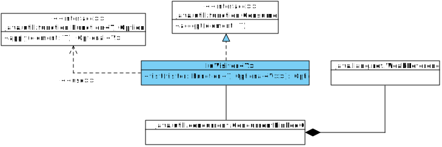

- Type Parameters:
T- element type
- All Implemented Interfaces:
Consumer<T>
This resource is thread-safe and intended for use in high-volume and time-sensitive component initialization scenarios. Elements are weakly held, so will may only be visited until cleared by the garbage collector.

-
Constructor Summary
Constructors -
Method Summary
Modifier and TypeMethodDescriptionvoidAccepts an element to be observed.voidRemoves an element from observation queue without waiting for the garbage collector to clear it.subject()Gets aIuAsynchronousSubjectoriginated by non-cleared references to accepted elements.<V> Optional<V> Applies a function to each element until a generic condition is satisfied.
-
Constructor Details
-
IuVisitor
public IuVisitor()Default constructor.
-
-
Method Details
-
visit
Applies a function to each element until a generic condition is satisfied.- Type Parameters:
V- value type- Parameters:
visitor- Function toapplyeach element to until anOptionalvalue is returned.nullwill beappliedlast if no elements result in anOptionalvalue. The function may returnnullto continue to the next element, and may always returnnullto always visit all elements. A non-nullOptionalresult indicates the visited element satisfied a generic condition of some sort and so no other elements should be visited; theOptionalis immediately returned as-is.- Returns:
Optionalresult of the first terminal condition satisfied; null if a terminal condition was not met.
-
accept
Accepts an element to be observed. -
clear
Removes an element from observation queue without waiting for the garbage collector to clear it.This method does not tear down or take any other action on the element, the controlling component should handle all tear down logic related to this visitor instance prior to clearing the reference, typically invoking this method last in a managed instance's lifecycle teardown process.
This method has no effect if the element is not in the observation queue.
API Note: Since elements are
weakly held, this method is only necessary when hooking in to an external instance management mechanism. Typically, instances may simply be discarded rather then explicitly cleared.- Parameters:
element- element to clear
-
subject
Gets aIuAsynchronousSubjectoriginated by non-cleared references to accepted elements.Each call to this method returns an independent subject instance. The controller responsible for providing elements to the visitor must independently provide the same values to, and close its own, subject instance to ensure continuity for subscribers.
- Returns:
IuAsynchronousSubject
-